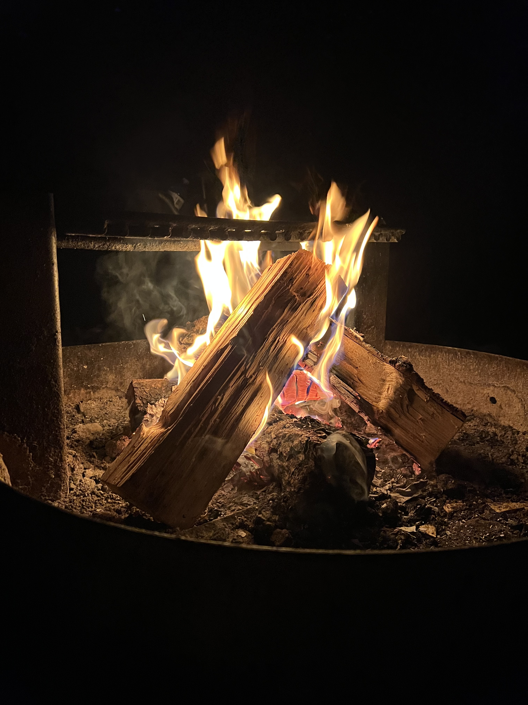

So I'm turning 20 tomorrow and that's crazy. Two decades seems really old and yet I know there is so, so, so much more life ahead and I'm only just getting started. I mean I've been at this journey for years, but it feels like I'm only now learning about who I am and what it means to be me. People often ask me how I think I've changed since going to college and I always like to say that I haven't really changed all that much, but I've just grown into myself more and I'm discovering what that looks when I'm in different seasons of life.
This past decade has obviously been a lot of growth (I hope I've changed a bit since I was 10), but to think about the masterfully interwoven plan that the Lord has had for my life since then and even before blows my mind. In the span of this past decade I've experienced love I could have never imagined, I've experienced betrayal I could have never imagined, I've experienced the beginning of new life for so many people around me, I've experienced death whose reality has crept closer and closer to me, I've formed addictions and been freed from them, I've built my reputation and seen it fall, I've had my heart broken and mended, I've learned lessons just to have them relearned over and over again, I've discovered the beauty of the God's steadfast love and faithfulness; so much has happened in my life so far and has all led up to where I am now—to who I am now.
I think the reason I want to write this whole post out to be able to look back and remember what it was like when I was 20, to see the things I was dealing with, the things I was hopeful for, the things that were just on my mind. In the short time I've been blogging and keeping record of my life, I can already see God's fingerprints in my life and I know His love and faithfulness is a constant theme in my life. This post is so I can see the evidence of His love in my life as I've already seen it thousands of times over.
So, Isaiah, remember that you're still wrestling with this idea of calling and purpose in your life. You're frustrated with being unable to see how engineering is going to tie itself with ministry and you're just remaining faithful to what you're doing, knowing there will be a day when the Lord puts it all in place. At the same time, do not forget there have been people that have been pouring into your life when you've been dealing with all of this. There are people that have been praying for you and speaking life into your life, turning the question back to you when you ask, "What's been on your heart?" I know you know this, but your friends mean the world to you and the relationships that you have been fostering, from the friends in passing to the deep, intimate friends, are what make all of it worth it. Your goal has always been relationship with people, no degree or status or job or possession, will ever be as important.
Remember that you've been fighting for rest. You've seen too many of your friends burning out, growing weary, having misconstrued ideas of their identity in their work. Rest is a war. You are more than what you do. I hope you continue to do things that pour into your life and give you rest—I hope you're creating. Keep playing piano, keep drawing, keep writing, keep learning. Don't strive to do things out of an empty tank but do things out of overflow that can only be found in His rest, His presence. And you know what that's supposed to feel like. Never leave the Secret Place, His presence, His steadfast love, is better than life.
And gosh, I'm so hopeful for the future. I know for a fact there is so much more in store for me and I'm longing to tap into that now. Even thinking about how my own capacity to feel has exponentially grown as I've gotten older, how much more will I know love, know pain, know emotion as my life experience grows? Sure, 20 feels grown but that's still so incredibly young and I know this next decade is going to filled with so much more than I can imagine.
At the same time I am so grateful for where I am right now—for the people in my life, for the spaces I get to be a part of, for the opportunities I have. As much as I'm looking forward to the future, I don't want to let what I have now just slip away because I'm caught up in what's to come. These little moments of seeing friends, the late night conversations, the meals exchanged—you know exactly how quickly that can all be stripped away. Love where you are right now. There is purpose in the now.
Also, if you've read this far, I want to thank you. In whatever way that we've crossed paths, know that you have had an impact on who I am (and those aren't just empty words). To my friends, you know who you are, I would not be the man I am today with you guys and I love y'all so much. If there's only one thing I can ever give you, I hope it's that you know what it is to be shown steadfast love, love in the truest sense of the word, in the way that can only come from the Father. I hope that you know what it is to have someone be faithful to you, faithfulness in the way that can only come from the Father. Because whether you know it or not, you all have showed me what it is to love and to be loved. Thank you for growing with me.
To another decade of steadfast love and faithfulness.
steadfast love & faithfulness
